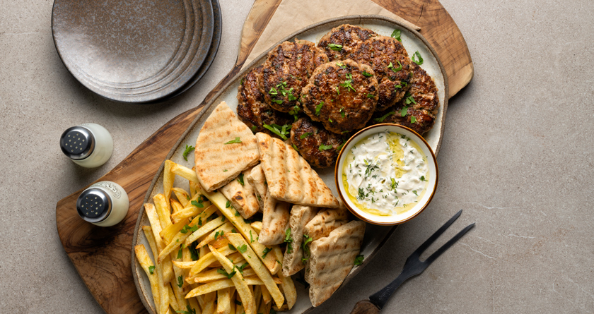

Greek-style grilled burger patties
Home
Greek-style grilled burger patties

Description
Prepare the ultimate burger patties with ground pork and beef! These patties are loaded with herbs and cheese and grilled to perfection for the juiciest meat delicacy!
Ingredients
- 400 g ground pork
- 400 g ground beef, flank
- 1 onion
- 1 clove(s) of garlic
- 2 tablespoon(s) mint, fresh
- ¼ bunch parsley
- 6-7 tablespoon(s) olive oil
- 100 g sandwich bread, crustless
- 1 teaspoon(s) oregano, dried
- 1 chicken bouillon cube
- 50 g kefalotyri cheese, grated
- 1 egg, medium
- salt
- pepper
Steps
- Finely chop the onion, garlic, mint, and parsley.
- Place a frying pan over medium heat, add 2 tablespoons of olive oil, and let it heat up well.
- Add the onion and garlic, sauté them for 4-5 minutes until the onion is caramelized, and remove the pan from the heat.
- Put 1/3 of the bread, 3 tablespoons of olive oil, the onion and garlic, mint, parsley, oregano, and chicken bouillon cube into a chopper blender, and beat them until the cube is completely crushed.
- Put the remaining bread into a bowl and add water to soak it.
- Squeeze the bread well with your hands to remove all the moisture, and transfer it to a big bowl.
- Add the mixture from the blender, ground pork, ground beef, kefalotyri cheese, egg, salt, and pepper, and knead them well with your hands until completely combined.
- Cover the bowl with plastic wrap and refrigerate it for at least 1 hour.
- Remove the ground meat from the refrigerator, shape 8 burger patties, 180 g each, and add the rest of the olive oil on top.
- Place a grill pan over medium heat and let it heat up well.
- Transfer the patties to the pan in 2 batches, and grill them for 3-4 minutes on each side until they are cooked through and nicely browned.
- Remove the grill pan from the heat and transfer the burger patties to a serving platter.
- Serve the burger patties with fries, pitas, tzatziki sauce, and finely chopped parsley.